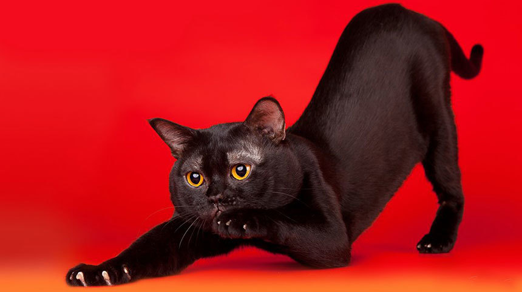
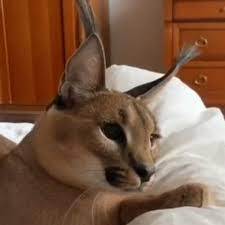
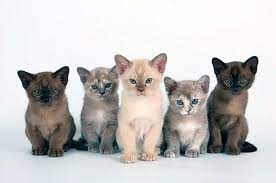

"Феліс" відноситься до роду диких котів (Felis). Однак, якщо ми розглядаємо "Феліс" як загальний термін, що описує домашню породу котів, ось короткий опис:
Зовнішність: Феліси (домашні коти) мають різні зовнішні ознаки, оскільки існує безліч порід котів. Вони можуть мати різні розміри, форму тіла, тип шерсті та окрасу. Від породи до породи можуть відрізнятися форма обличчя, розташування і розмір вух, форма й розмір очей та інші характеристики.
Характер: Феліси є різноманітними за характером, але вони загалом вважаються незалежними, але дружелюбними і прив'язаними до своїх власників. Вони можуть бути грайливими, спокійними, енергійними або витриманими, залежно від індивідуальності кожної конкретної породи або навіть окремого кота.
Bombay cat

Бурма (Burma) - це порода котів, знає свою привітну та люблячу природу. Ось короткий опис породи:
Зовнішність: Коти породи Бурма мають середній розмір тіла з округлою формою і міцною мускулатурою. Їх голова є округлою з великими округлими очима, які можуть мати відтінки різного блакитного кольору. Шерсть у них коротка, гладка і традиційно має однорідний колір.
Характер: Бурми знає своєю дружбою і прив'язаністю до своїх власників. Вони часто називаються "собакою серед котів", після чого можуть бути дуже предані та люблячі. Бурми активні, грайливі і спілкуватися з ними - це справжнє задоволення.
Lynx cat

Лінкс (Lynx) - це порода котів, яка надзвичайно приваблює своїм виглядом та характером. Ось короткий опис породи:
Зовнішність: Лінкси мають середній або великий розмір тіла з сильною та мускулистою структурою. Вони відрізняються круглою головою, довгими щічними кістками, великими округлими очима та характерними "кишеньками" на вухах, які роблять їх неперевершеними.
Характер: Лінкси відомі своєю незалежністю та самовпевненістю. Вони можуть бути спокійними, обережними та розсудливими. Лінкси добре пристосовуються до різних умов і зазвичай виявляють терпіння та витримку.
Burma cat

Бурма (Burma) - це порода котів, знає свою привітну та люблячу природу. Ось короткий опис породи:
Зовнішність: Коти породи Бурма мають середній розмір тіла з округлою формою і міцною мускулатурою. Їх голова є округлою з великими округлими очима, які можуть мати відтінки різного блакитного кольору. Шерсть у них коротка, гладка і традиційно має однорідний колір.
Характер: Бурми знає своєю дружбою і прив'язаністю до своїх власників. Вони часто називаються "собакою серед котів", після чого можуть бути дуже предані та люблячі. Бурми активні, грайливі і спілкуватися з ними - це справжнє задоволення.